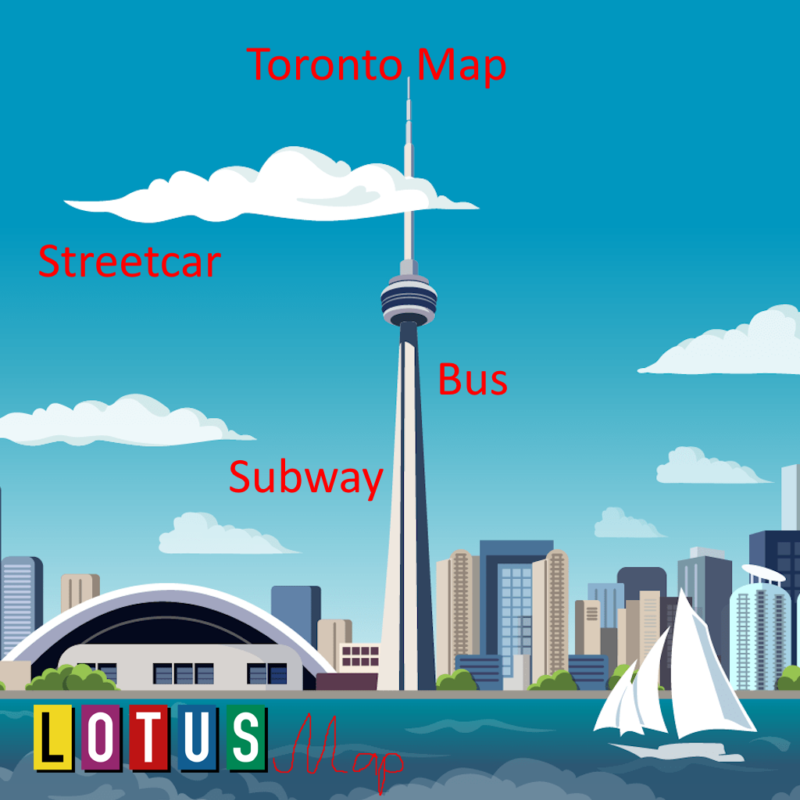

About Me
Skills
Projects
Here are some of my recent projects:

Backend development, server architecture, database management

3D modeling, simulation programming, real-time systems
Web development, information architecture, responsive design
Game development, system modeling, user experience design
A fast, cross-platform desktop UI framework built in Rust — no Chromium bloat, native rendering, designed in the spirit of Toronto
Rust · Systems Programming · GPU Renderer · Cross-Platform · Plugin System
Projects from my Gymnasium years — algorithm development, data structures, software engineering
Contact Me
If you'd like to get in touch for professional opportunities or collaboration, feel free to email me at devtimmofto@mail.de or connect with me on LinkedIn.
Professional Links